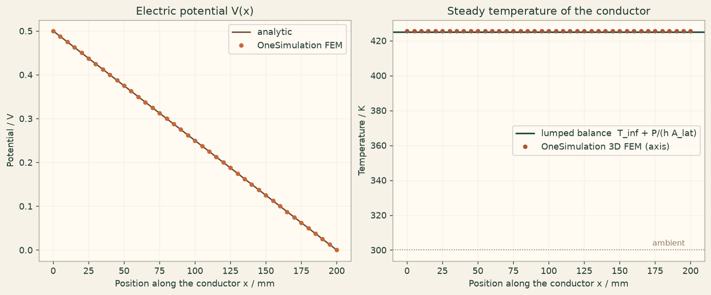

Docs › Examples › Joule heating of a conductor
Electro-thermal · 3D
Joule heating of a conductor
A conductor carrying a current heats up and cools by convection, graded against the ohmic power and the lumped heat balance.

What it computes
OneSimulation solves the current-conduction problem, feeds the Joule power sigma |E|^2 into the heat equation and applies convective losses on the lateral faces.
What it checks
The dissipated power V^2 sigma A/L is exact; the temperature rise P/(h A_lat) is within about 0.4 % and the integrated convective loss within about 0.02 %.
The notebook
The complete notebook, cell by cell. Run it to produce the figures and the comparison printout.
A straight conductor (length \(L\), square cross-section \(a\times a\), electrical conductivity \(\sigma\)) carries a steady current driven by a voltage \(V_0\) applied between its two end faces. The dissipated Joule power heats the solid; the four lateral faces lose that heat by convection to ambient air at \(T_\infty\) with coefficient \(h\), and the end faces are thermally insulated.
OneSimulation solves two stationary problems in sequence. First the current conduction problem \(\nabla\cdot(\sigma\nabla V)=0\), which for a homogeneous conductor has the same form as the charge-free potential equation and is therefore posed with the Poisson model (the potential does not depend on the value of the homogeneous coefficient). The solved electric field then enters the heat conduction problem as the volumetric Joule source \(q=\sigma\,|\mathbf E|^2\).
Reference. The potential falls linearly, the current density is uniform,
and because the transverse Biot number \(h\,a/(2k)\) is tiny the conductor is essentially isothermal, so the steady lumped balance gives
from importlib.metadata import version
import numpy as np
import matplotlib.pyplot as plt
from onesim.cad.d3 import Box
from onesim.materials import IsotropicSolid, VacuumPermittivity
from onesim.meshing import StructuredHexahedralMesher
from onesim.numerics import Numerics
from onesim.numerics.fem import FiniteElement, Lagrange
from onesim.numerics.linear import SparseDirect
from onesim.physics.electrostatics import (
FixedPotential, PoissonEquation, ZeroNormalElectricDisplacement,
)
from onesim.physics.heat_transfer import ConvectiveHeatFlux, HeatConduction, HeatFlux
from onesim.simulation import Problem, Simulation
print("OneSimulation:", version("onesimulation"))Parameters
L = 0.200 # m, conductor length (x direction)
a = 0.004 # m, square cross-section side
sigma = 1.0e6 # S/m, electrical conductivity (resistance alloy)
k = 15.0 # W/(m K), thermal conductivity
V0 = 0.50 # V, voltage between the end faces
h = 50.0 # W/(m^2 K), convective coefficient on the lateral faces
T_inf = 300.0 # K, ambient temperature
area = a * a # m^2, cross-section
lateral_area = 4 * a * L # m^2, convecting surface
E_ref = V0 / L # V/m
J_ref = sigma * E_ref # A/m^2
R_ref = L / (sigma * area) # ohm
P_ref = V0**2 / R_ref # W, dissipated power
q_ref = sigma * E_ref**2 # W/m^3, Joule power density
dT_ref = P_ref / (h * lateral_area) # K, lumped temperature rise
biot = h * (a / 2) / k
print(f"Resistance R = {R_ref*1e3:.3f} mOhm, power P = {P_ref:.3f} W, "
f"lumped rise dT = {dT_ref:.2f} K, transverse Biot = {biot:.4f}")
geometry = Box(length=L, width=a, height=a)
mesh = StructuredHexahedralMesher(cells=(40, 3, 3)).generate(geometry)
print("Mesh:", mesh.cell_count, "hexahedra")
boundaries = geometry.boundaries
lateral = boundaries.y_min | boundaries.y_max | boundaries.z_min | boundaries.z_maxStep 1: current conduction
The end faces are the electrodes; the lateral faces carry no normal current.
conduction = PoissonEquation(domain=geometry.volume, permittivity=VacuumPermittivity(),
charge_density=0.0)
electric = Simulation(
problem=Problem(
name="Current conduction in a straight conductor",
geometry=geometry, physics=(conduction,),
boundary_conditions=(
FixedPotential(boundary=boundaries.x_min, physics=conduction, value=V0),
FixedPotential(boundary=boundaries.x_max, physics=conduction, value=0.0),
ZeroNormalElectricDisplacement(boundary=lateral, physics=conduction),
),
),
mesh=mesh,
numerics=Numerics(spatial=FiniteElement(element=Lagrange(order=2)), linear_solver=SparseDirect()),
).solve_stationary()
E_field = electric.field(conduction.electric_field)
# Total current from the normal electric flux through the grounded electrode.
flux = E_field.integrate(boundary=boundaries.x_max, normal_component=True)
I_num = sigma * abs(float(flux.value))
P_num = V0 * I_num
err_P = abs(P_num - P_ref) / P_ref
print(f"Current: FEM {I_num:.4f} A, analytic {V0/R_ref:.4f} A")
print(f"Dissipated power: FEM {P_num:.4f} W, analytic {P_ref:.4f} W ({100*err_P:.3f} % off)")
assert err_P < 0.01, "Dissipated power deviates more than 1 % from V^2/R."Step 2: heat conduction with the Joule source
The volumetric source is evaluated from the solved electric field, \(q(\mathbf x)=\sigma\,|\mathbf E(\mathbf x)|^2\).
def joule_heating(x, y, z):
points = np.column_stack((np.ravel(x), np.ravel(y), np.ravel(z)))
E = np.asarray(E_field.evaluate(points))
return (sigma * np.sum(E**2, axis=1)).reshape(np.shape(x))
material = IsotropicSolid(
density=8000.0, specific_heat_capacity=500.0, thermal_conductivity=k,
youngs_modulus=200e9, poisson_ratio=0.30, thermal_expansion_coefficient=16e-6,
)
heat = HeatConduction(domain=geometry.volume, material=material, heating=joule_heating)
thermal = Simulation(
problem=Problem(
name="Joule-heated conductor with convective cooling",
geometry=geometry, physics=(heat,),
boundary_conditions=(
ConvectiveHeatFlux(boundary=lateral, physics=heat,
heat_transfer_coefficient=h, ambient_temperature=T_inf),
HeatFlux(boundary=boundaries.x_min, physics=heat, value=0.0),
HeatFlux(boundary=boundaries.x_max, physics=heat, value=0.0),
),
),
mesh=mesh,
numerics=Numerics(spatial=FiniteElement(element=Lagrange(order=2)), linear_solver=SparseDirect()),
).solve_stationary()
temperature = thermal.field(heat.temperature)Comparison with the lumped balance
xs = np.linspace(0.0, L, 41)
axis = np.column_stack((xs, np.full_like(xs, a / 2), np.full_like(xs, a / 2)))
T_axis = np.asarray(temperature.evaluate(axis)).reshape(-1)
surface = np.column_stack((xs, np.full_like(xs, a / 2), np.full_like(xs, a)))
T_surface = np.asarray(temperature.evaluate(surface)).reshape(-1)
dT_num = float(np.mean(T_axis)) - T_inf
err_T = abs(dT_num - dT_ref) / dT_ref
spread = float(np.max(T_axis) - np.min(T_axis))
print(f"Temperature rise on the axis: FEM {dT_num:.3f} K, lumped balance {dT_ref:.3f} K ({100*err_T:.2f} % off)")
print(f"Axis-to-surface difference: {float(np.mean(T_axis - T_surface)):.3f} K, "
f"variation along the axis: {spread:.2e} K")
assert err_T < 0.02, "Temperature rise deviates more than 2 % from the lumped balance."
assert spread < 0.01 * dT_ref, "A uniformly heated insulated conductor must be isothermal along its axis."
# Energy balance: the convective loss must equal the electric power.
Q_conv = float(thermal.field(heat.heat_flux).integrate(boundary=lateral, normal_component=True).value)
err_Q = abs(Q_conv - P_ref) / P_ref
print(f"Convective loss: FEM {Q_conv:.4f} W, electric power {P_ref:.4f} W ({100*err_Q:.2f} % off)")
assert err_Q < 0.02, "Convective loss must balance the dissipated power within 2 %."Figure
cream = "#fbf5eb"
fig, (ax1, ax2) = plt.subplots(1, 2, figsize=(11, 4.5), constrained_layout=True)
fig.patch.set_facecolor(cream)
for ax in (ax1, ax2):
ax.set_facecolor("#fffaf2"); ax.grid(alpha=0.25); ax.set_xlabel("Position along the conductor x / mm")
V_axis = np.asarray(electric.field(conduction.potential).evaluate(axis)).reshape(-1)
ax1.plot(xs * 1000, V0 * (1 - xs / L), color="#6b442f", label="analytic")
ax1.plot(xs * 1000, V_axis, "o", color="#c56838", ms=4, label="OneSimulation FEM")
ax1.set(ylabel="Potential / V", title="Electric potential V(x)"); ax1.legend()
ax2.axhline(T_inf + dT_ref, color="#214D43", lw=1.8, label="lumped balance T_inf + P/(h A_lat)")
ax2.plot(xs * 1000, T_axis, "o", color="#A85539", ms=4, label="OneSimulation 3D FEM (axis)")
ax2.axhline(T_inf, color="#8a7a63", ls=":", lw=1.0)
ax2.text(L * 1000 * 0.98, T_inf + 0.02 * dT_ref, "ambient", color="#8a7a63", fontsize=9, ha="right")
ax2.set(ylabel="Temperature / K", title="Steady temperature of the conductor"); ax2.legend()
plt.show()Going further
Raise the voltage and the temperature rise grows with \(V_0^2\); thicken the conductor and the transverse Biot number grows until the cross-section is no longer isothermal, at which point the lumped balance has to be replaced by the radial parabola of a uniformly heated rod. Add a temperature-dependent conductivity to turn the one-way handoff into a two-way electro-thermal problem.